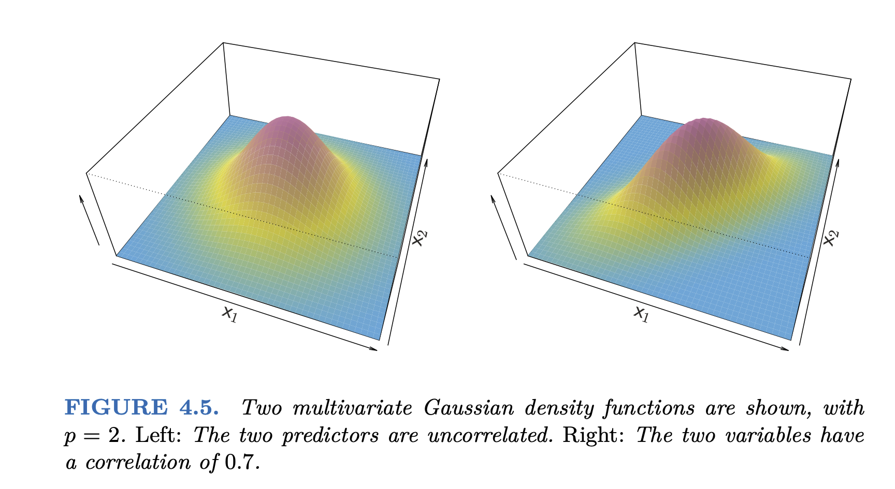
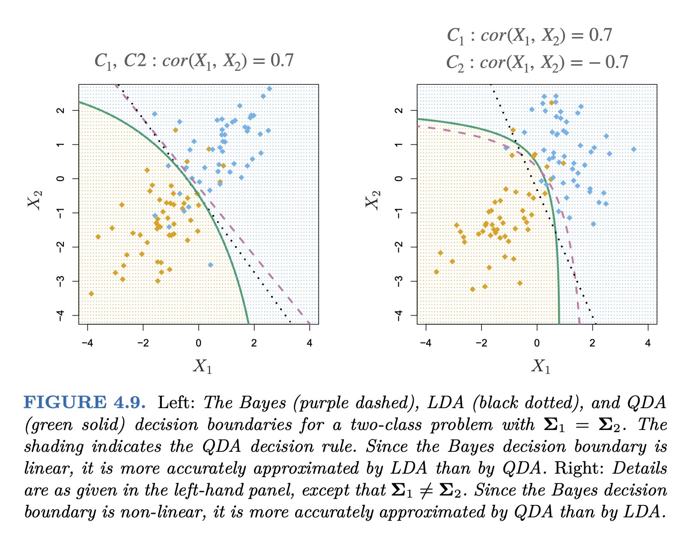
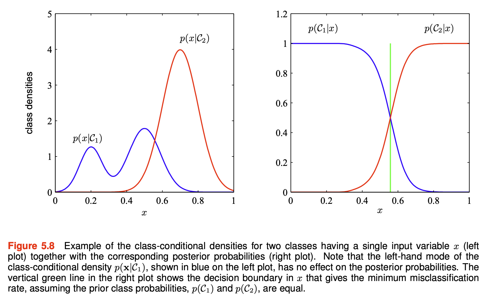
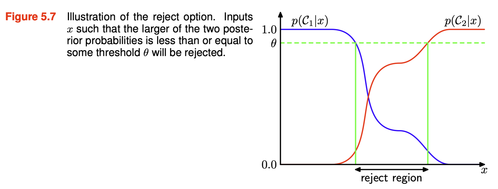

Load packages
# numerical calculation & data frames import numpy as npimport pandas as pd# visualization import matplotlib.pyplot as pltimport seaborn as snsimport seaborn.objects as so# statistics import statsmodels.api as sm# pandas options 'mode.copy_on_write' , True ) # pandas 2.0 = ' {:.2f} ' .format # pd.reset_option('display.float_format') = 7 # max number of rows to display # NumPy options = 5 , suppress= True ) # suppress scientific notation # For high resolution display import matplotlib_inline"retina" )
Logistic Regression에서는 클래스 \(C_k\) 에 속할 확률을 다음과 같이 선형모델로 직접 얻었음.
\(E(Y=1|X=x)=\) 또는\(P(Y = C_1|X=x) = \sigma (\beta_0 + \beta_1 X_1 + \cdots + \beta_p X_p)\) where \(\displaystyle\sigma(z) = \frac{1}{1+e^{-z}}\) : sigmoid/logistic function
몇 가지 개선될 부분들
두 클래스가 분명히 분리되는 경우, logistic 모형의 파라미터 추정치가 상당히 불안정함.
X의 분포가 각 클래스에서 정규 분포가 가까운 경우 (특히 표본 크기가 작은 경우), 새로운 generative 접근 방식이 logistic보다 더 정확할 수 있음.
새로운 generative 접근 방식은 Y 클래스가 두 개 이상인 경우로 자연스럽게 확장될 수 있음. (logisitce의 경우 multinomial logistic 방식이 있음)
Generative Classifier
관찰된 값 \(x\) 에 대해, \(Y\) 의 conditional distribution인 \(P(Y = C_k|X=x)\) 을 추정하는데, 각 클래스 별로 \(X\) 의 분포를 이용해 역으로 \(Y\) 의 분포를 계산하는 방식; Bayes theorem을 이용
\(\displaystyle P(Y = C_k|X=x) = \frac{P(X=x|Y=C_k)P(Y=C_k)}{P(X=x)}\)
\(P(Y = C_k|X=x)\) : 관측치 \(x\) 가 클래스 \(C_k\) 에 속할 확률; posterior probability \(P(Y=C_k)\) : 임의로 선택된 관측치가 클래스 \(C_k\) 에 속할 확률; prior probability \(P(X=x|Y=C_k)\) : 클래스 \(C_k\) 에 속하는 \(x\) 의 probability density >> “generative”
주어진 \(x\) 에 대해, 각 클래스 \(C_k\) 에 속할 확률 \(P(Y=C_k|X=x)\) 를 계산하여, 이 중 가장 높은 확률을 가지는 클래스를 선택하는 방식으로 분류; Bayes classifier
posterior probability 는 prior probability 의 update된 확률로 볼 수 있음.
예를 들어, 피부암 진단을 피부 이미지의 명암(\(X\) :0-254)으로 예측한다고 하면,\(P(Y=cancer|X=240) \propto P(X=240|Y=cancer) * P(Y=cancer)\)
“이미지의 명암이 240일 때 피부암일 확률” \(\propto\) “피부암일 때, 그 이미지의 명암이 240일 확률” x “이미지들 중 피부암일 확률”
\(P(Y=cancer|X=240)\) > \(P(Y=not~cancer|X=240)\) 이면, 이미지를 피부암으로 분류.
분모: \(\displaystyle P(X=x) = P(X=x|Y=C_1)P(Y=C_1) + P(X=x|Y=C_2)P(Y=C_2)\)
따라서, \(\displaystyle P(Y = C_k|X=x) = \frac{P(X=x|Y=C_k)P(Y=C_k)}{P(X=x|Y=C_1)P(Y=C_1) + P(X=x|Y=C_2)P(Y=C_2)}\)
Prior \(P(Y=C_k)\) 의 추정치는 각 클래스에 속하는 표본의 비율로 추정어려운 문제는 probability density function \(f_k(x)=P(X=x|Y=C_k)\) 의 추정!
단순화하기 위해 이 분포에 대한 가정을 부과
Linear Discriminant Analysis (LDA) : (Multivariate) Gaussian 분포, 모든 클래스에 대해 covariance matrix(공분산 행렬) 동일Quadratic Discriminant Analysis (QDA) : (Multivariate) Gaussian 분포, 각 클래스 별로 고유한 covariance matrix(공분산 행렬)
Palmer Penguins 데이셋의 예에서,
1-dimensional (1 predictor) bill_length로 펭균 종을 구분하는 경우
2-dimensional (2 predictors) bill_length과 bill_depth로 펭균 종을 구분하는 경우
Linear Discriminant Analysis (LDA)
(Multivariate) Gaussian 분포 가정
모든 클래스에 대해 covariance matrix(공분산 행렬) 동일
1-dimensional: p = 1
\(\displaystyle f_k(x) = \frac{1}{\sqrt{2\pi}\sigma} \exp\left(-\frac{(x-\mu_k)^2}{2\sigma^2}\right)\)
클래스 각각에 대해서 분포의 평균 \(\mu_k\) 를 추정: MLE로 추정하면 클래스별 평균값
\(\sigma\) 는 모든 클래스에 대해 동일하다고 가정하고 추정: MLE로 추정하면 클래스별 분산값의 weighted 평균MLE(Maximum Likelihood Estimation)이 이상치(outliers)에 민감함을 주의
\(\displaystyle P(Y = C_k|X=x) = \frac{P(X=x|Y=C_k)P(Y=C_k)}{P(X=x)}\) \(\displaystyle \qquad\qquad\qquad\qquad= \frac{P(X=x|Y=C_k)P(Y=C_k)}{P(X=x|Y=C_1)P(Y=C_1) + P(X=x|Y=C_2)P(Y=C_2) + P(X=x|Y=C_3)P(Y=C_3)}\) \(\displaystyle \qquad\qquad\qquad\qquad= \frac{f_k(x)P(Y=C_k)}{f_1(x)P(Y=C_1) + f_2(x)P(Y=C_2) + f_3(x)P(Y=C_3)}\) (A)
이제 \(P(Y=C_k)\) 만 추정하면 되는데,\(C_k\) 에 속할 확률 추정값: \(\displaystyle \hat P(Y=C_k) = \frac{n_k}{n}\) where \(n_k\) : 클래스 \(C_k\) 에 속하는 표본의 수, \(n\) : 전체 표본의 수
예측값을 얻기 위한 준비 완료!
\(X=x\) 에 대한 예측값은 다음 세 확률 중 가장 큰 값에 해당하는 클래스에 할당; the Bayes classifier
\(P(Y = C_1|X=x)\) \(P(Y = C_2|X=x)\) \(P(Y = C_3|X=x)\)
식 A에서 분모는 모두 같기 때문에 분자만 비교하면 됨. 즉, \(\displaystyle f_k(x)P(Y=C_k)\) 를 비교하면 됨.\(\displaystyle \delta_k(x) = \frac{\mu_k}{\sigma^2}x - \frac{\mu_k^2}{2\sigma^2} + \log(P(Y=C_k))\) : discriminant function
추정치로 바꾸면, \(\displaystyle \hat\delta_k(x) = \frac{\hat\mu_k}{\hat\sigma^2}x - \frac{\hat\mu_k^2}{2\hat\sigma^2} + \log(\frac{n_k}{n})\) : \(x\) 에 대한 일차함수 형태
\(\mu\) , \(\sigma\) , prior의 추정치와 몇 개의 \(X\) 값에 대한 예측 확률을 구해보면,
mu sigma prior
Adelie 38.79 2.95 0.44
Chinstrap 48.83 2.95 0.20
Gentoo 47.50 2.95 0.36
Bill Length(mm) 35 42 43.35 45 50 52.05 55
Species
Adelie 1.00 0.76 0.44 0.13 0.00 0.00 0.00
Chinstrap 0.00 0.04 0.12 0.22 0.42 0.50 0.61
Gentoo 0.00 0.20 0.44 0.65 0.58 0.50 0.39
예를 들어, 어떤 펭균의 부리의 길이를 관찰하기 전, 그 펭균이 Adelie 펭귄일 확률은 0.44(prior)인데,
만약, 부리의 길이가 45mm임을 관찰하면, 그 펭균이 Adelie 펭귄일 확률은 0.13(posterior)로 update됨.
\(\displaystyle P(Adelie|X=45) = \frac{f_{Adelie}(X=45)*0.44}{normalize~factor} = 0.13\)
혹은 부리의 길이가 50mm임을 관찰하면, 그 펭균이 Adelie 펭귄일 확률은 0.001(posterior)로 update됨.
각 클래스에 속할 확률을 구하면, 이 확률을 이용해 threshold를 정해 분류할 수 있음.
예를 들어, 적어도 .70의 확률/확신이 있을 때만 분류를 실행하고,
그렇지 않다면 분류를 보류할 수 있음.
이는 분류의 오류를 낮추는 방법 중 하나; reject option
반면, 분류만이 목적이라면, threshold를 정하지 않고, 가장 높은 확률을 가지는 클래스로 분류하면 되고,
Decision boundaries : \(\delta_k(x)\) 가 최대가 되는 클래스가 변하는 \(x\) 들의 위치
\(\delta_1(x_0) = \delta_3(x_0)\) : \(x_0 = 43.35\) \(\delta_2(x_1) = \delta_3(x_1)\) : \(x_1 = 52.05\)
2-dimensional: \(\mathbf{x_1}, \mathbf{x_2}\)
Multivariate Gaussian 분포: \(\displaystyle f_k(\mathbf{x}) = \frac{1}{(2\pi)^{p/2}|\Sigma|^{1/2}} \exp\left(-\frac{1}{2}(\mathbf{x}-\mu_k)^T\Sigma^{-1}(\mathbf{x}-\mu_k)\right)\)
\(\displaystyle \mathbf{x}= \begin{bmatrix} x_1 \\ x_2 \end{bmatrix}\) \(\mu_k\) : 클래스 \(C_k\) 에 대한 \(X_1\) 과 \(X_2\) 의 평균 벡터: \(\displaystyle \begin{bmatrix} \mu_{k1} \\ \mu_{k2} \end{bmatrix}\) \(\Sigma\) : 클래스 \(C_k\) 에 대한 공분산 행렬(covariance matrix): \(\displaystyle \begin{bmatrix} \sigma_{k_1}^2 & \sigma_{k_1k_2} \\ \sigma_{k_2k_1} & \sigma_{k_2}^2 \end{bmatrix}\)
모든 클래스 \(C_k\) 에 대해 동일하다고 가정
MLE(Maximum Likelihood Estimation)로 추정

Source: p. 150, Introduction to Statistical Learning with Applications in Python by G. James, D. Witten, T. Hastie, R. Tibshirani
Discrimint function: 다음이 가장 큰 값을 가지는 클래스에 할당
\(\displaystyle\delta_k(\mathbf{x}) = \mathbf{x}^T\Sigma^{-1}\mu_k - \frac{1}{2}\mu_k^T\Sigma^{-1}\mu_k + \log(P(Y=C_k))\) : \(ax_1 + bx_2 + c\) 형태
\(\mu_k\) covariance matrix
Adelie Chinstrap Gentoo
bill_length 38.79 48.83 47.50
bill_depth 18.35 18.42 14.98
sigma_1 sigma_2
sigma_1 8.68 1.74
sigma_2 1.74 1.25
Adelie Chinstrap Gentoo
prior 0.44 0.20 0.36
예를 들어, \(\delta_1(x_1, x_2) = 2.1x_1 + 11.8x_2 - 149.9\)
Decision boundaries : \(\delta_k(\mathbf{x})\) 가 최대가 되는 클래스가 변하는 \(\mathbf{x}\) 들의 위치
\(\delta_1(\mathbf{x}) = \delta_2(\mathbf{x})\) : red line: Adelie vs. Chinstrap \(\delta_2(\mathbf{x}) = \delta_3(\mathbf{x})\) : purple line: Chinstrap vs. Gentoo \(\delta_3(\mathbf{x}) = \delta_1(\mathbf{x})\) : green line: Gentoo vs. Adelie
precision recall f1-score support
Adelie 0.97 0.99 0.98 151
Chinstrap 0.94 0.87 0.90 68
Gentoo 0.97 0.98 0.98 123
accuracy 0.96 342
macro avg 0.96 0.95 0.95 342
weighted avg 0.96 0.96 0.96 342
Quadratic Discriminant Analysis (QDA)
(Multivariate) Gaussian 분포 가정
각 클래스 별로 고유한 variances, covariances를 가정: covariance matrix(공분산 행렬)
\(\displaystyle \delta_k(\mathbf{x}) = - \frac{1}{2}(\mathbf{x}-\mu_k)^T\Sigma_k^{-1}(\mathbf{x}-\mu_k) -\frac{1}{2}\log|\Sigma_k| + \log(P(Y=C_k))\) \(\displaystyle \qquad= - \frac{1}{2}\mathbf{x}^T\Sigma_k^{-1}\mathbf{x} + \mathbf{x}^T\Sigma_k^{-1}\mu_k - \frac{1}{2}\mu_k^T\Sigma_k^{-1}\mu_k -\frac{1}{2}\log|\Sigma_k| + \log(P(Y=C_k))\) \(\displaystyle \qquad= (ax_1^2 + bx_1x_2 + cx_2^2) + (dx_1 + ex_2) + d\) : 모든 2차항들을 포함 (quadratic )
이번에는 bill_length_mm와 flipper_length_mm를 예측변수로 사용하여 펭균 종을 구분하면,
\(\mu_k\)
Adelie Chinstrap Gentoo
bill_length 38.79 48.83 47.50
flipper_length_mm 189.95 195.82 217.19
Covariance matrices for each class
Adelie sigma_1 sigma_2
sigma_1 7.09 5.67
sigma_2 5.67 42.76
Chinstrap sigma_1 sigma_2
sigma_1 11.15 11.23
sigma_2 11.23 50.86
Gentoo sigma_1 sigma_2
sigma_1 9.50 13.21
sigma_2 13.21 42.05
Adelie Chinstrap Gentoo
prior 0.44 0.20 0.36
QDA vs. LDA
파라미터의 수: \(K*p\) vs. \(K*p(p+1)/2\) 추가
LDA가 훨씬 덜 flexible classifier, 따라서 lower variance
데이터가 적어 variance가 문제가 된다면 LDA를 선택하는 것이 좋을 수 있음.
만약, common covariance의 가정에서 많이 벗어난다면 LDA는 심각한 bias를 가질 수 있음.

Source: p. 157, Introduction to Statistical Learning with Applications in Python by G. James, D. Witten, T. Hastie, R. Tibshirani
Naive Bayes
각 클래스 내에서 예측변수들이 독립적이라고 가정: 서로 연관관계가 없다고 가정
각 클래스 별로 고유한 분포를 가정: QDA와 유사
\(\displaystyle P(Y = C_k|X=x) = \frac{P(X=x|Y=C_k)P(Y=C_k)}{P(X=x)}\)
p = 2 인 경우의 예에서,
\(P(X=(x_1, x_2)|Y=C_k) = P(X_1=x_1| Y=C_k) * P(X_2=x_2 | Y=C_k)\) : 즉, 각 예측변수 내에서의 분포만 고려 (marginal distribution)\(\displaystyle P(Y = C_k|X=x) = \frac{f_{k1}(x_1) * f_{k2}(x_2) * P(Y=C_k)}{P(X=x)}\)
앞서 covariance matrix로 joint disctribution을 추정했으나, 실질적인 joint distribution을 추정하는 것은 매우 어려움
비현실적이지만, 예측변수들이 서로 독립이라고 가정하면, 분포를 추정하는 것이 매우 간단해지며
속도가 매우 빠르고 조정 가능한 매개변수가 거의 없기 때문에 분류 문제에 대한 빠르고 간단한 기준 제공
특히, 예측 변수 대비 표본 수가 적어 joint distribution을 추정하기 어려운 경우에 유용
이는 bias가 높아질 수 있지만, variance가 낮아지기 때문에 그 이점이 있음.
즉, 표본 수(n ) 대비 예측변수가 많아(p ) variance가 높은 경우, Naive Bayes의 이점을 살릴 수 있음.
각 클래별로 (1-d density function) \(f_{k}\) 를 추정하는데 여러 옵션을 사용할 수 있음.
앞서 LDA에서 사용한 Gaussian 분포; Gaussian Naive Bayes
적절한 binning을 통한 histogram, 또는 (smoothed) kernel density estimation
카테고리 변수인 경우, 각 카테고리 값의 비율을 이용; Categorical Naive Bayes
혼합되어 있는 경우; 각각 따로 확률을 구해 곱 Mixed Naive Bayes
예를 들어,
Source: p. 160, Introduction to Statistical Learning with Applications in Python by G. James, D. Witten, T. Hastie, R. Tibshirani
비슷하게, 독립성의 가정을 기반으로 예측변수들이 binominal/multinominal(이항/다항) distribution을 따르는 경우,Multinominal Naive Bayes 로 불림
펭귄의 예로, Gaussian 분포를 사용하면
Logistic regression과의 관계
사후 확률(posterior)의 log odds의 관점에서 보면, logistic regression은
\(\displaystyle log\left(\frac{P(Y=1|X=x)}{P(Y=0|X=x)}\right) = \beta_{0} + \beta_{1}X_1 + \cdots + \beta_{p}X_p\)
일반적으로 K개의 클래스가 있을 때, 기준이 되는 클래스(K) 대비 특정 클래스(k)의 posterior의 log odds를 생각하면 확장될 수 있음.
\(\displaystyle log\left(\frac{P(Y=C_k|X=x)}{P(Y=C_K|X=x)}\right) = \beta_{0}^k + \beta_{1}^k X_1 + \cdots + \beta_{p}^k X_p\)
LDA에서 동일하게 posterior의 log odds를 살펴보면,
\(\displaystyle log\left(\frac{P(Y=C_k|X=x)}{P(Y=C_K|X=x)}\right) = \log\left(\frac{f_k(x)P(Y=C_k)}{f_K(x)P(Y=C_K)}\right)\)
Generative vs. Discriminative Models
Discriminative models: \(P(C_k|X)\) 를 직접 추정
즉, \(P(C_k|\mathbf{x}) = f(\beta_0 + \beta_1 x_1 + \cdots + \beta_p x_p)=f(\mathbf{w}^T \mathbf{x} + w_0)\)
\(f\) 를 activation function 이라고 부르며, 역함수를 link function 이라고 부름\(f\) 가 sigmoid function (\(f^{-1}\) : logit function) 일 때 logistic regression이는 \(P(\mathbf{x}|C_k)\) 를 추정하지 않고, 직접 \(p\) 개의 파라미터만 추정하면 됨
또한, generative model에서 \(P(X|C_k)\) 를 추정하는데 매우 많이 데이터와 계산이 필요한데, 종종 decision boundary를 결정하기 위한 posterior \(P(C_k|\mathbf{x})\) 얻는데 \(P(\mathbf{x}|C_k)\) 의 정보가 다 필요하지 않을 수 있음. (아래 그림)
이는 discriminative models이 decision boundary를 결정하는데 더 효과적일 수 있음
또한, generative model에서 추정하는 class-conditional density, \(f_k(\mathbf{x})\) 가 실제 분포와 일치하지 않는다면 discriminative model이 더 정확할 수 있음

Source: p. 145, Deep Learning: Foundations and Concepts by Bishop, C. M. & Bishop, H
generative model의 경우 \(p(X)\) 를 이용해 새로운 데이터에 대해 예측할 때, 그 데이터의 발생 확률을 얻을 수 있어서 이를 예측의 정확성에 대한 보완 정보로 활용할 수 있음.
확률적 모형의 장점들
특정 클래스에 속할 확률에 대한 정보를 얻을 수 있으며,
이 확률과 loss function을 결합하여, 기대값(expected loss)를 계산하여 최적의 분류를 결정할 수 있음.
주어진 \(\mathbf{x}\) 를 \(\displaystyle\sum_{k} L_{kj}P(C_k|\mathbf{x})\) 이 최소가 되는 클래스에 분류
어느 클래스에도 확실히 속하지 않는 경우, 분류의 결정을 보류할 수 있음; reject option

Source: p. 143, Deep Learning: Foundations and Concepts by Bishop, C. M. & Bishop, H
매우 드물게 발생되는 클래스가 존재하는 경우, balanced dataset에서 학습한 후 prior를 조정
posterior \(\sim f_k\) , prior
상이한 예측변수들에 대해 독립적으로 모형을 만든 후 결합할 수 있음
예를 들어, 피부암의 진단에서 사진 판독 & 혈액검사 결과를 독립적으로 모형을 만든 후 결합
두 모형에서 사용된 예측변수들은 서로 독립이라고 가정하면
\(P(\mathbf{x_A, x_B}|C_k) = P(\mathbf{x_A}|C_k)P(\mathbf{x_B}|C_k)\)
한편, 확률적 모델을 사용하지 않고 discriminant function을 구해 class label을 직접 예측하는 방식도 있음
decision tree
support vector machine

{kind=link}
{kind=link}
{kind=link}
{kind=link}
{kind=link}
{kind=link}
{kind=link}
{kind=link}
{kind=link}
{kind=link}
{kind=link}
{kind=link}
{kind=link}